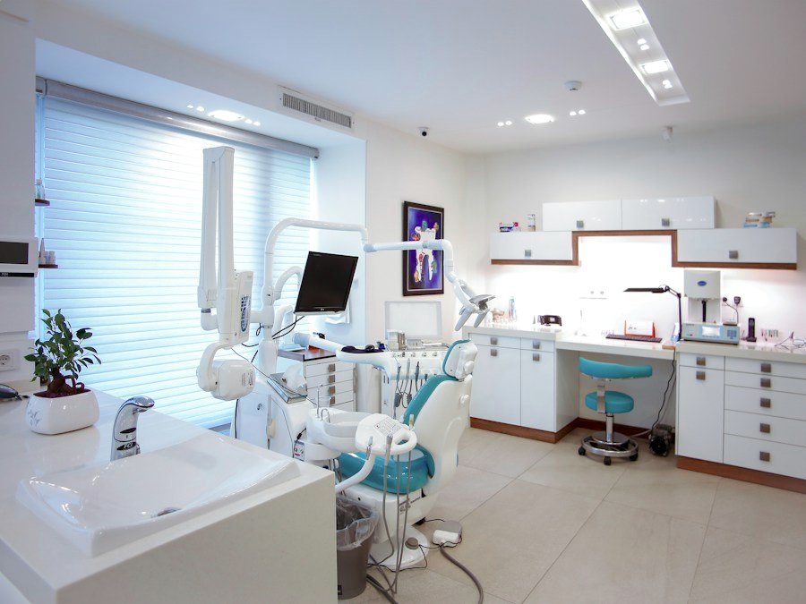

Dr. Clara Sterling, MD, FRCOG
"We built the sanctuary we wished existed for our own mothers, sisters, and daughters."
Founded in 2008 by women for women, Bloom & Cradle reimagined obstetrics and gynecology as a deeply personal, restorative partnership.
"We built the sanctuary we wished existed for our own mothers, sisters, and daughters."
Early in my obstetric training, I noticed a painful contradiction: women were experiencing the most vulnerable, transformative moments of their lives—first gynecologic exams, fertility struggles, miscarriage, and childbirth—inside sterile, hurried environments built for institutional throughput rather than human dignity.
In 2008, a circle of five female obstetricians, midwives, and reproductive endocrinologists came together to open Bloom & Cradle. Every detail—from heated linen gowns and acoustic consultation rooms to level-III neonatal readiness hidden softly behind warm wood panelling—was crafted so you feel safe, respected, and in command of your care.
With warmth & devotion, Dr. Clara Sterling
Every clinical protocol and bedside interaction is anchored in three unwavering commitments.
To deliver gold-standard gynecologic, fertility, and maternal-fetal medicine within a trauma-informed, unhurried sanctuary that honours informed consent at every step.
Explore ServicesTo set the global benchmark for private women's health—where advanced fetal diagnostics and minimally invasive surgery coexist with holistic nutritional and emotional care.
Our Care TeamWe never dismiss pain as "normal," we practice transparent package pricing with zero surprise billing, and we maintain 24/7 on-site specialist coverage.
Transparent PricingEighteen years of continuous innovation in maternal safety and patient experience.
Opened our flagship boutique outpatient gynecology and midwifery center with 4 consultation suites.
Inaugurated the Blossom Hydrotherapy Birthing Wing and Level-III Neonatal Stabilization Suite.
Awarded National Excellence in Maternal-Fetal Medicine & Low-Intervention Birth Outcomes.
Launched our next-generation digital pregnancy tracker and holistic fourth-trimester recovery center.
Every morning at 7:30 AM, our obstetricians, midwives, neonatologists, pelvic physiotherapists, and lactation consultants gather for a shared clinical huddle—ensuring seamless communication across your entire care team.
Meet All 8 Lead SpecialistsMoments of calm, science, and gentle hospitality across our four-floor campus.

Patients are greeted by name and escorted directly to private lounges with freshly brewed organic raspberry-leaf or ginger tea.
45-minute prenatal checkups with partners welcomed, birth preferences explored, and fetal heartbeats shared.
Our on-site laboratory processes AMH, thyroid, iron ferritin, and progesterone assays within hours to eliminate waiting anxiety.
Expectant mothers and new families stroll through our private olive-tree courtyard during early labour or postnatal recovery.
We believe safe, respectful maternal care is a human right. Through the Bloom & Cradle Community Foundation, 5% of every private maternity package funds free prenatal ultrasound screenings, iron supplementation, and adolescent menstrual health workshops in underserved neighbourhoods.
Led by our volunteer midwives and fellows on the first Sunday of every month.